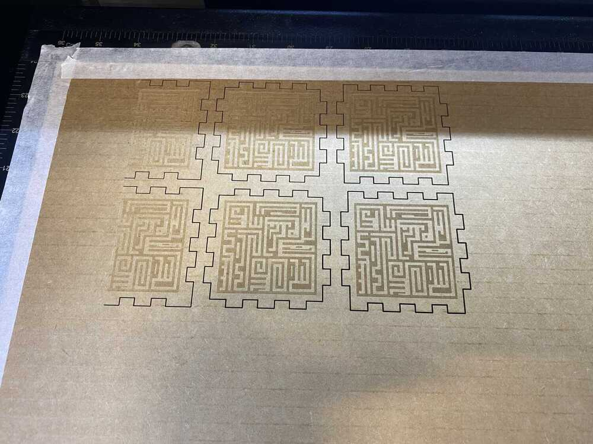
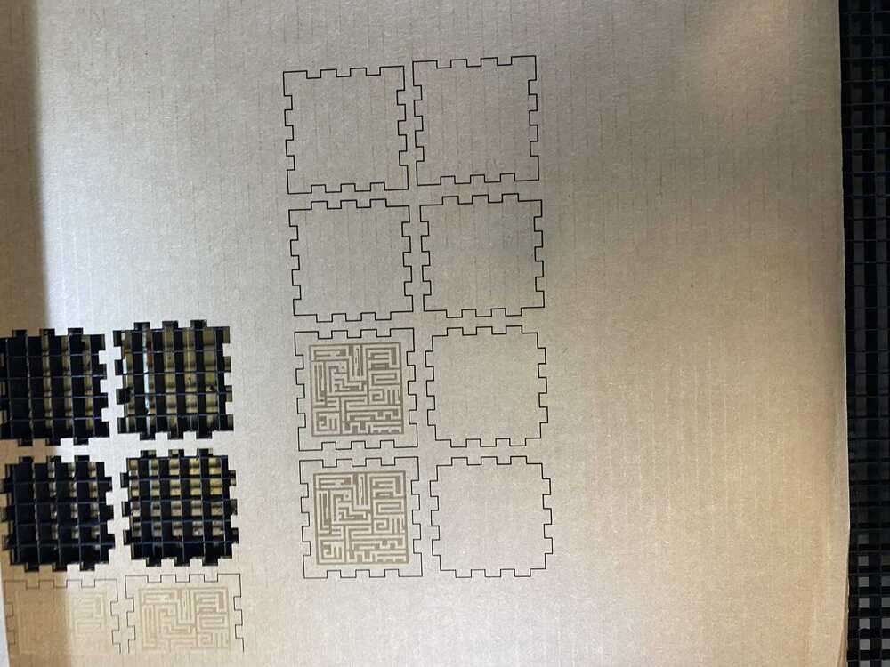
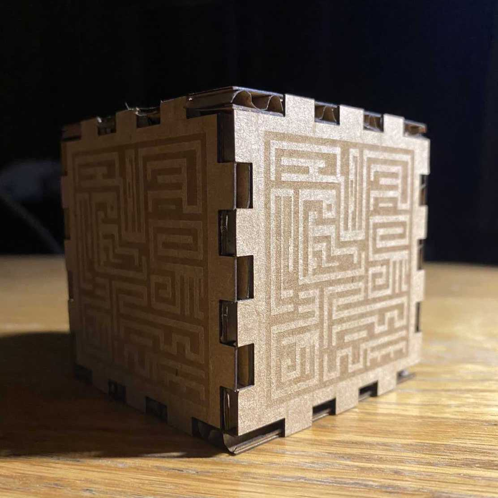
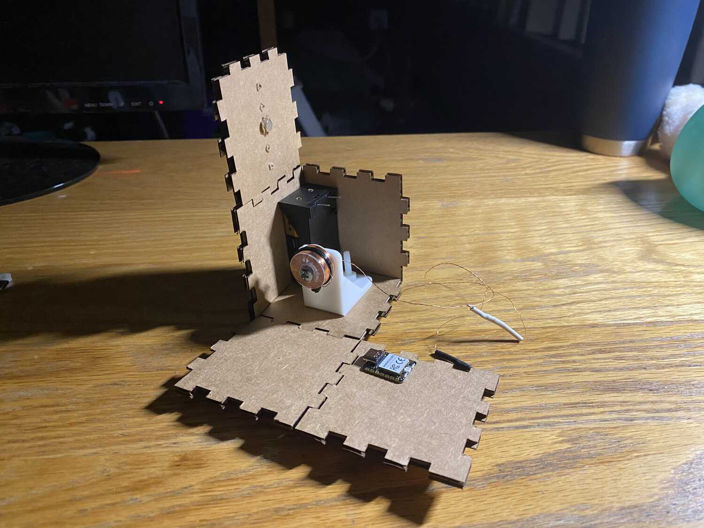

Week 2: Vinyl and Laser Cutting
Documentation outline
- What is my goal
- get a box to house electronics
- slice a geometry
- make a looks like model
- sketch
-image
- download fusion
- update mac
- clear 30Gb of storage
- wait 3h in limbo
- get through a bunch of pop ups
- create box
- lose patience and go to a finger box generator
- learn how to manipulate parameters
- take measurements to reference
- create constrained parametric geometry for each piece
- create brackets to model the layout and figure out the clearances
- export as svg
- add 2d engraving for fun
- TO DO use fusion slicer to make sliced sphere
- cutting
- test cut for kerf
- test design on carboard
- make looks-like using acrylic
- acrylic glue for the finger joint box?
Making prototypes that I can rapidly test with.
Ok. The first attempt was a little cluttered, I would like to generate the box more cleanly and
add an engraving and some evenly spaced holes.
Ill start by sketching a square on the xy plane. for time I simply decided to insert the dxf of the fingbox design I used and add on the engraving pattern that I made previously.
While trying to drag around the color ordering, I used control alt click and it closed the software with no warning. Luckily it saved a backup.
It looks like the engraving goes before any vector cuts by default, regardless of color arrangement.

oops, looks like the cutting bed was different than the actual bed for some reason. It looks like I actually ignored a warning that the print settings raised.
Instead of fixing the problem of the bed, I simply shift it over by some margin in corel draw and click print preview to verify.
All good now! I repeat the 2 sides that didn't make it on the first cut and cut out panels for 2 more boxes. This should be enough for more prototyping.

And that's it for now! I have a looks like model and some more boxes that I can put holes and to arrange my screws and stick things to.

